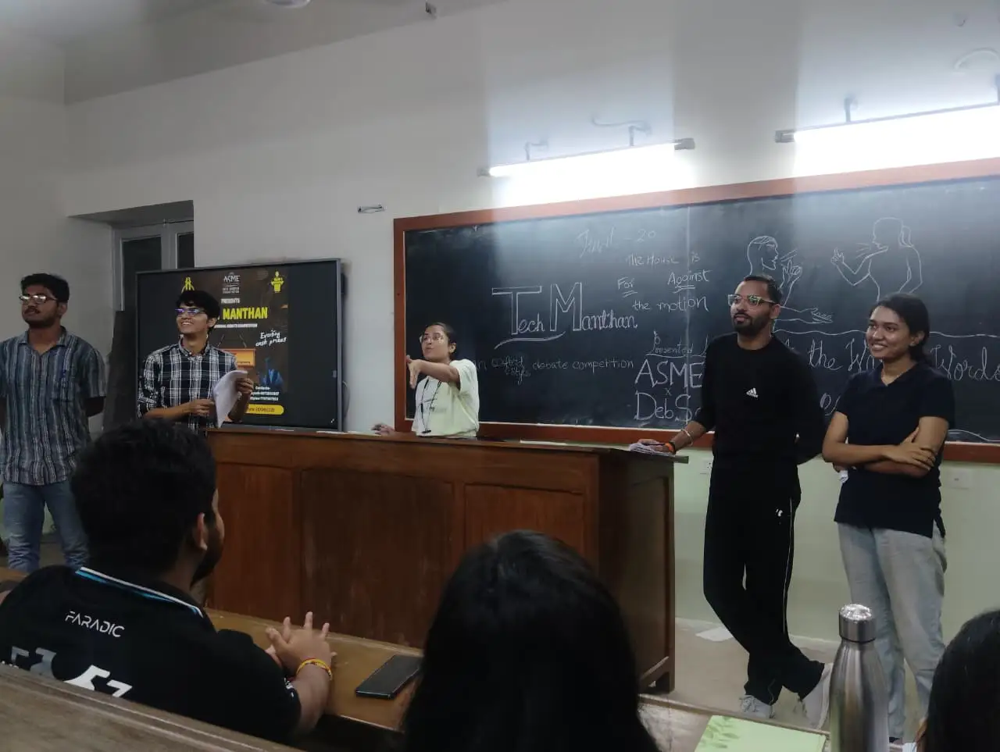
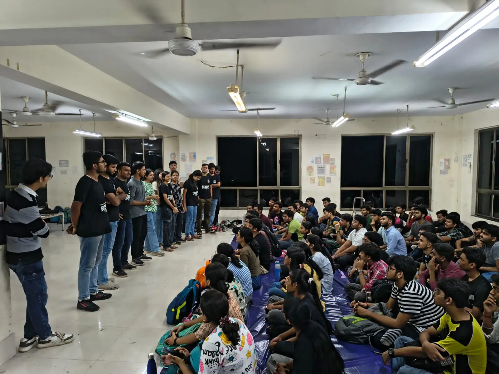
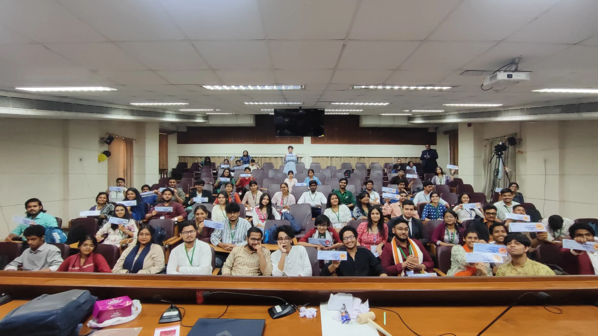

Why DebSoc?
 01 / THE COMMUNITY
01 / THE COMMUNITY





The Debating Society of IIEST, Shibpur, or DebSoc, is a student-led community built around conversation, critical thinking, and public speaking. Since its early years, the society has served as a space where students come together to debate ideas, challenge perspectives, and learn to express themselves clearly and confidently.
What began as small weekly discussions gradually evolved into one of the institute’s most active platforms for debate and Model United Nations. Over the years, DebSoc has hosted Oxford-style debates, parliamentary formats, public speaking sessions, memorial debates, and MUN conferences, while representing IIEST at institutions across the country, including IIT Kharagpur, IISER Kolkata, Jadavpur University, and IIT Guwahati. Members have earned recognition in diplomacy, public speaking, and delegation performance.
But DebSoc has never been defined only by awards. Many members join with little or no experience in debating or public speaking. Through regular sessions, practice debates, workshops, and peer mentorship, students gradually develop confidence in speaking, thinking critically, and listening carefully.
The society hosts flagship events throughout the year, including BECON (Bengal Engineering Conclave of Nations), the Paramesh Ranjan Dhar Memorial Debate, Disputation, Voices in Focus, and collaborative events under Instruo and TechManthan. Each reflects the same spirit: open discussion, intellectual curiosity, and meaningful dissent.
Even during the pandemic, DebSoc continued conducting online debates, training sessions, and inductions, proving that the community extended far beyond physical rooms or auditoriums. That continuity remains one of its defining strengths.
Today, DebSoc brings together students from different disciplines and backgrounds who share an interest in ideas, dialogue, and expression. Whether someone joins to compete nationally, improve communication skills, explore international relations, or become more confident speaking in public, the society offers a space to grow.